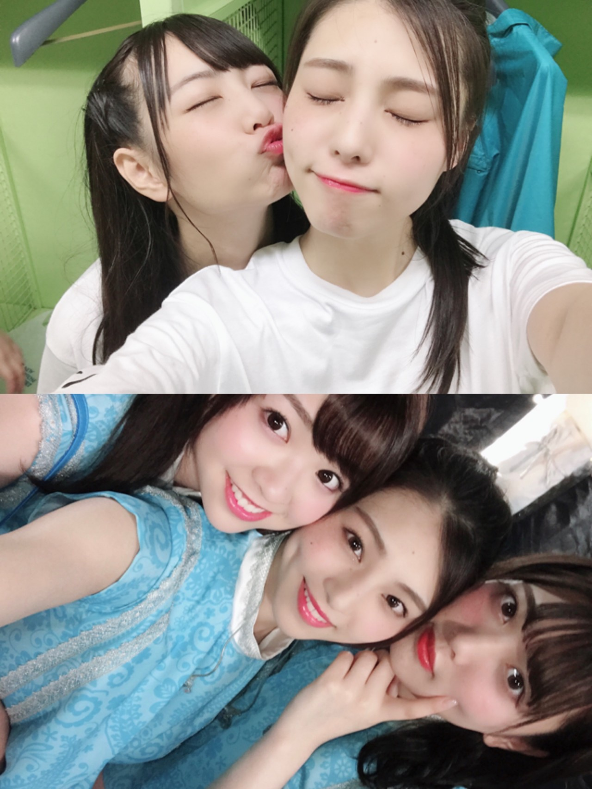
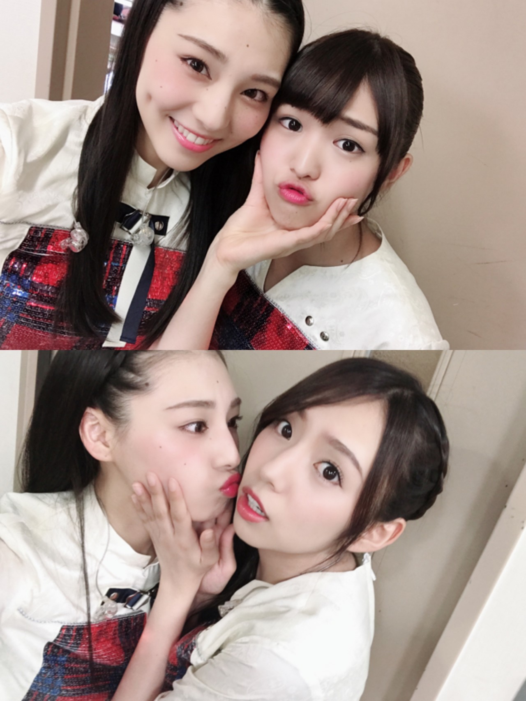
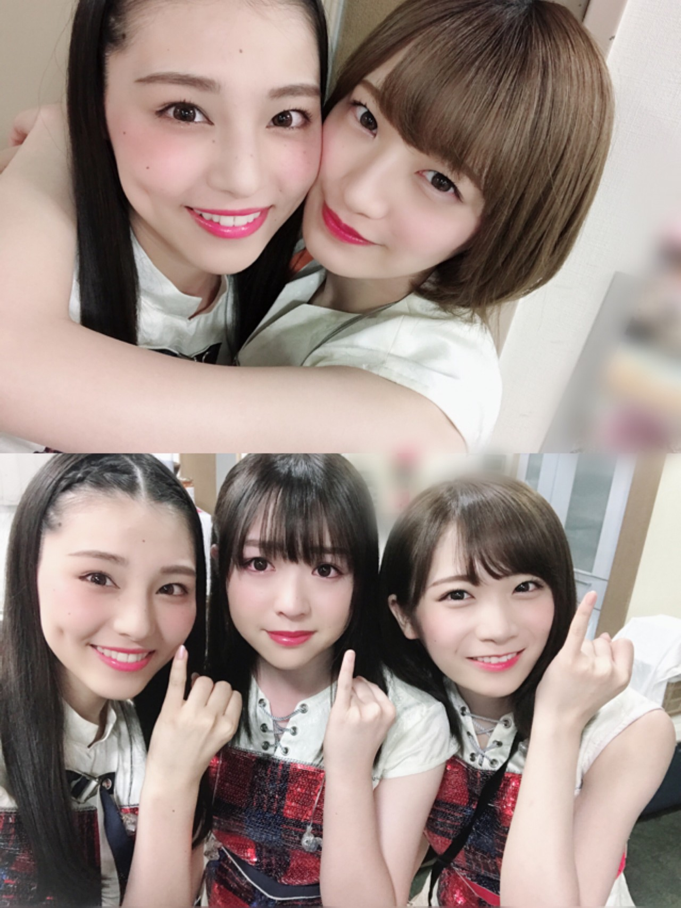
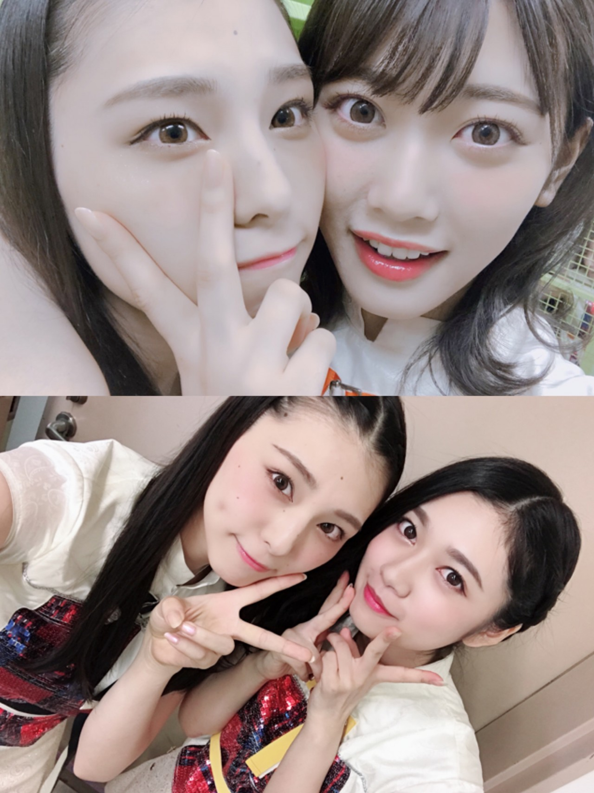
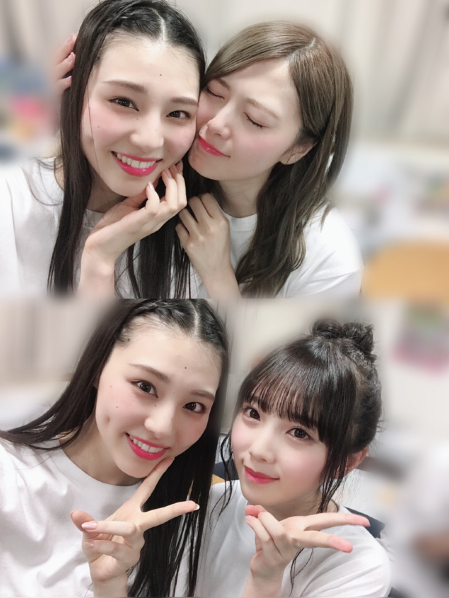

| 2018/07 12 Thu | ざっくり書きすぎて多分本質の部分伝わらないけど、書いてみた_(．．*)vol.246 |
みなさんこんばんは
相楽伊織です





みんなと撮った写真
全部思い出
大好きなみんな
この前の全体のお仕事で
純奈から
｢伊織ちゃんいないんだけど！ナニコレ！！！｣
って連絡来て
可愛いな～ってなりました( ･×･)♡笑
6th Birthday Live
3日間無事終えることが出来ました！
6万人×3で
のべ18万人のファンの皆様に来て頂けて
本当に本当に感謝しかないです(;_;)(;_;)
乃木坂の夏が最高のスタートになったと思うし
そこに参加できたことも本当に嬉しい(^^)
ヘリコプターからの映像が
とてつもなく綺麗で鳥肌たったし
花火も映像で見てすごく綺麗だった☆！
あーなんかね、
ライブ終わって1番に思ったことは
｢メンバーの事こんなに好きだったんだ、自分｣
て、思いました。
あと、ライブって楽しいって思えた
正直ね、ライブ嫌だなって思ってた時期もあったし
ファンの人の声援も歪んで聞こえる時もあって
もうダメだ、ってなった時もあったの
でも今回のライブは
ただただ楽しめた！！！
楽しんでる姿をみんなに見て欲しかったのかも。
初日は雨だし
2日目も強風で大変だったけど
3日目はしっかり晴れてくれたし
本当によかった
選抜メンバーとは
ほとんど一緒にならなかったけど
2日目のアンコールで真夏さんと同じ会場だったし
最終日のダブルアンコールのガールズルールを
白石さんと一緒に歌えたの
2番のサビのジャンプ
一緒に手繋いで飛んだの、忘れられないなぁ
すっごい嬉しかった(^^)
あとは、｢アンダー｣を披露した時
日奈子がセンターで歌って最後に笑顔だった時
すっごく嬉しくて
最終日2回目の｢アンダー｣披露の時は
イントロの移動で日奈子が目合わせて笑ってくれて
その時心から｢よかったぁ｣って思った。
日奈子は今回のライブ
私と踊れるの最後だからって頑張ってくれて
笑顔で一緒に踊れたの本当に嬉しかったよ(^^)
お互いが必要としてる関係って
中々簡単に作れるものじゃないし
絶妙なバランスを保ってないと
簡単に壊れちゃうものだから難しいけど
日奈子とはずっとずっとこんな関係でいたいな♡
みなさんも推しメンとは
そういう素敵な関係築いていってね。
この4年間はみんなとの思い出しかないくらい
本当に乃木坂で活動してる時間は長くて
濃いものだったんだなって思いました。
皆さんには
私の卒業という選択が
どう見えてるのか分からないけど
私はこれからの人生の中で
色んな事に挑戦したいしやりたい事が山ほどあるし
経験したいことも沢山ある！
それを叶えるために
乃木坂46を辞めるって決断をしたんです。
もちろん
モデルのお仕事をしたいって事が1番だけど、
それだけだったら多分乃木坂にいた方が
チャンスは沢山あると思う。
でもそれより大事なものを見つけたっていうか
本当に言葉足らずで上手く言い表せないんだけど
自分の理想の人生を
自分の努力で歩いていきたいって思ったの！
正直、順風満帆な人生じゃないし
むしろその逆だったし
両親には本当に迷惑かけたし
わがままに生きてきて
きっとこれからもそうだと思うけど
これからも私は自分を信じてがんばる！！！
何かに挑戦することって簡単じゃないけど
私の卒業がきっかけで誰かの背中を
後押しできたら嬉しいな！！
誰かの力になりたいって強く思います。
昨日の真夏軍団のニコ生配信が
軍団での最後のお仕事でした！
ニコ生さんはいつも
やった事ないことやらせてくれたし
自由に出来たから本当に楽しかったな♪
この軍団があって
この4人でよかったって改めて思います(^^)
真夏さんのことずっとずっと大好き♡
i o r i .

コメント(426)
2018/07/12 17:48